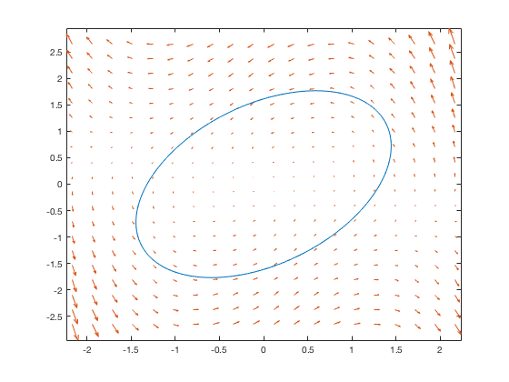
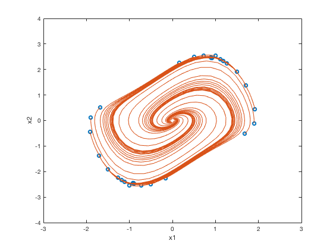
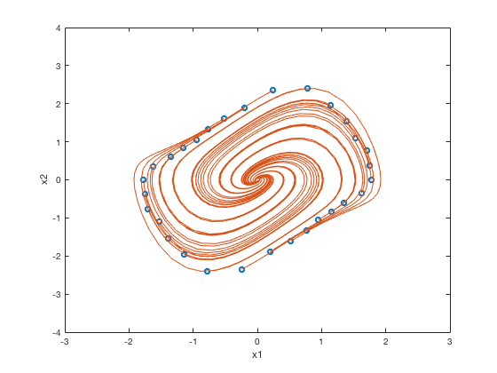

Elastic Region of Attraction Example
An example of estimating the region of attraction of the Van der Pol equation in reverse time using an elastic search method.
Contents
Define the State Space Model
syms x1 x2 sys = symss; sys.states = [x1 x2]; sys.f(1) = -x2; sys.f(2) = x1 + (x1^2 - 1)*x2;
Region of Attraction (Lyapunov)
The standard method for determining the region of attraction uses the Lyapunov method, and generally gives a conservative result.
roa(sys, 'Trajectory', true);
 We can see that the default Lyapunov boundary produces a poor estimation of the region of attraction. In order to produce a better approximation, we can use an elastic search method.
Elastic Region of Attraction
Compute the elastic region of attraction using the standard method.
R = elroa(sys, 'Points', 30, 'Radial', false);
Convert the points to initial conditions.
ic = num2cell(R, 2);
Plot the trajectories using the initial conditions.
tspan = [0 10]; plot(R(:, 1), R(:, 2), 'o') hold on nlsim2(sys, tspan, ic) hold off xlim([-3 3]) ylim([-4 4])
We can see from the plot that the elastic method provides a less conservative region of attraction than the Lyapunov method. However, the points on the ring are drawn to the extrema of the region of attraction and can miss some non-convex boundaries.
Elastic Region of Attraction (Radial)
Compute the elastic region of attraction using the radial method.
R = elroa(sys, 'Points', 30, 'Radial', true); ic = num2cell(R, 2);
Plot the trajectories using the initial conditions.
plot(R(:, 1), R(:, 2), 'o') hold on nlsim2(sys, tspan, ic) hold off xlim([-3 3]) ylim([-4 4])
The radial method in general produces a more conservative result than the standard method. However, we can see that because the points are restricted to only moving radially outward, we can detect non-convex regions with greater accuracy than the standard method.